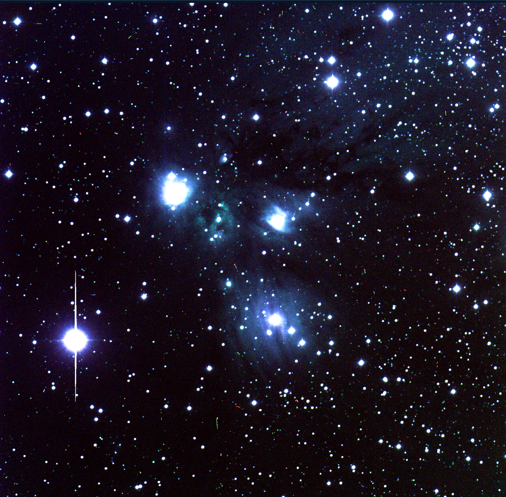

<!doctype html>
<html lang="en">

  <!doctype html>
<html lang="en">

<head>
 <meta charset="utf-8">
  <title> Spatial Processes </title>
  <link rel="icon" type="image/png" href="images/colorcompos.png">
  <meta name="description" content="Hello World">
  <meta name="author" content="Sanya Arora">
  <meta name="description" content="background">

  <meta content="text/html" http-equiv="Content-type" />
  <meta content="width=device-width, initial-scale=1" name="viewport" />

      <link href="https://fonts.googleapis.com/css2?family=Roboto&family=Ubuntu:wght@700&display=swap" rel="stylesheet">
  <link rel="stylesheet" href="https://maxcdn.bootstrapcdn.com/bootstrap/3.4.1/css/bootstrap.min.css">

   <script src="https://ajax.googleapis.com/ajax/libs/jquery/3.5.1/jquery.min.js"></script>
  <script src="https://maxcdn.bootstrapcdn.com/bootstrap/3.4.1/js/bootstrap.min.js"></script>
    <link rel="stylesheet" href="css/styles.css">

</head>


</html>
  <!doctype html>
<html lang="en">


<body>

  <nav class="navbar navbar-default">
	  <div class="container-fluid">
	    <div class="navbar-header">
	      <a> </a>
	     </div>
	    <ul class="nav navbar-nav">
	    	<li> <a href="#" style="color: #2e2a65; font-family: 'Ubuntu', sans-serif; font-size:20px"> ASTR 408 Final Project</a> </li>
	      <li><a href ="index.html"> Home </a></li>
	      <li class="dropdown">
	        <a class="dropdown-toggle" data-toggle="dropdown" href="#">Course Summary
	        <span class="caret"></span></a>
	        <ul class="dropdown-menu">


	          <li><a href=ch1.html> Probability Concepts </a></li>
	          <li><a href=ch2.html> Nonparametrics </a></li>
	          <li><a href=ch3.html> Regression </a></li>
            <li><a href=ch4.html> Smoothing </a></li>
            <li><a href=ch5.html> Multivariate Analysis </a></li>
            <li><a href=ch6.html> Time Series </a></li>
            <li><a href=ch7.html> Clustering </a></li>
            <li><a href=ch8.html> Truncated Data </a></li>
            <li><a href=ch9.html> Spatial Processes </a></li>


	        </ul>
	      </li>
	    </ul>
	  </div>
	</nav>


</body>
</html>

<body>

  <h2> Spatial Processes (Chapter 12) </h2>
      <div class = "container-fluid">
        <div class ="col-lg-12">
          <div class="jumbotron vertical-center" style="background-color: #f2e6dc">
            <p class="text"> In this section of the course, we studied spatially distributed data. Spatial point processes are used to analyze sets of points
              in one, two, or more dimensions.
              We discussed several statistical techniques used in spatial analysis: <br>
              <br>
              <b> Density Estimation: </b> Techniques such as kernel density estimation (KDE) can be used to estimate the PDF
              of spatially distributed data. KDE helps in creating a smooth estimate of density over space.
              <br>
              <br>
              <b> Moran's I and Geary’s C: </b>Measures of how a variable
                correlates with itself over space. They help in understanding whether a pattern is clustered, dispersed, or random.
                Moran’s I is more sensitive to spatial clustering, while Geary’s C focuses on spatial dissimilarity.
              <br>
              <br>
              <b> Two-Point Correlation Function: </b>Used to measure the probability over random that a
              pair of objects will be found at a certain distance apart.
              <br>
              <br>
              <b>Ripley's K Function: </b> Used to detect spatial clustering at multiple scales. Provides insights into the clustering pattern of points
              beyond what is expected for a random distribution.
              <br>
              <br>
              <b>Besag’s L Function: </b> An adaptation of Ripley’s K, Besag’s L function transforms the K statistic to stabilize
              variance, and is useful in visualizing patterns in data.
              <br>
              <br>
              <b>Variogram Analysis: </b> Assesses how data similarity decreases over distance.
              Important in modeling spatial correlation structures and is often a precursor to kriging.
              <br>
              <br>
              <b>Kriging: </b> A group of geostatistical techniques used to interpolate the values of random fields.
              Ordinary kriging uses a weighted average of known data points to estimate unknown points.
              Beyond ordinary kriging, there are several more kriging methods such as universal kriging and cokriging.
              These methods handle scenarios like varying trends over space or multiple correlated variables.
              <br>
              <br>
              Overall, spatial processes are important in many different fields. A notable example is climate research, where we might
              predict natural events in certain locations by spatially interpolating data. 


              <br>
              <br>


             </p>


      </div>
    </div>
  </div>

<footer>
<html>


</html>
</footer>
</body>

</html>
